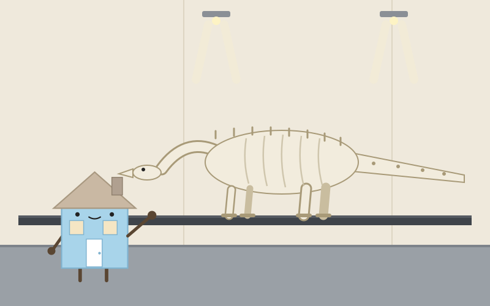
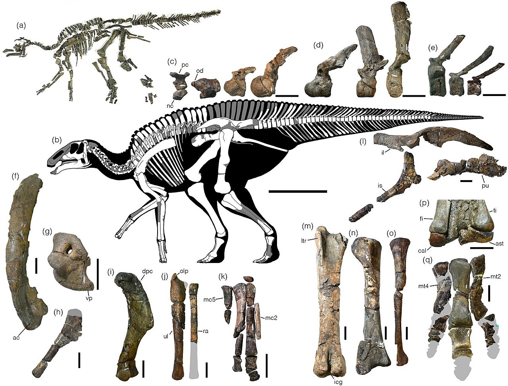
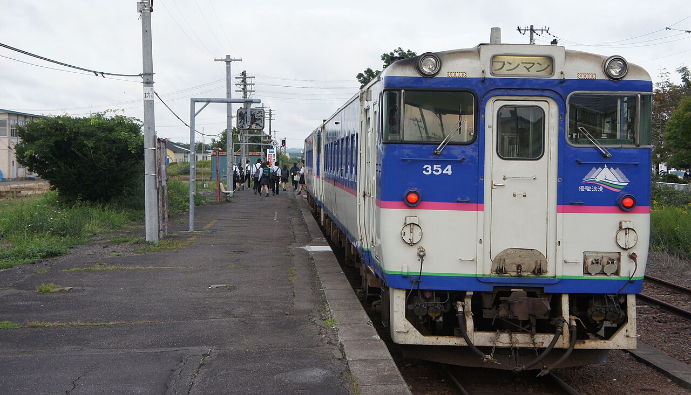
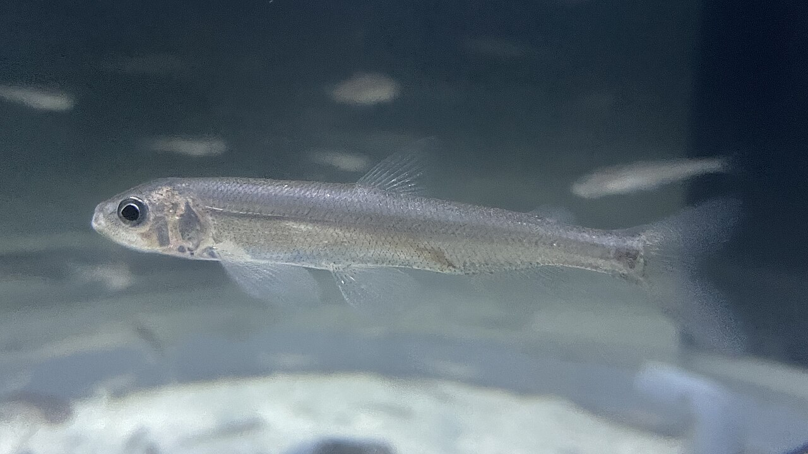

Day 14：むかわ町

恐竜館の床に立ったとき、足の下に骨があった。アクリルの板の向こう、土色の岩の中に、白っぽい骨が横たわっている。首の骨、背骨、尾。約8メートルの体が、まるで眠っているみたいに伸びている。7200万年前の骨だ。館内はしんと静かで、自分の靴の音だけが床に返ってきた気がした。骨は動かない。けれど、ここにある、ということが、やけにはっきりしていた。

ここへは苫小牧から来た。7時51分発の日高本線、鵡川行き。気動車は、低いエンジンの音を響かせて走った。勇払、浜厚真を過ぎて、8時20分に鵡川駅へ。30.5キロ、日本で一番短い「本線」だ。鵡川駅前9時37分発のバスに乗り換えて、穂別中央まで68分。車窓には原野の草と、川の水面が続いた。バスを降りて少し歩くと、恐竜館があった。

この骨は2003年、穂別の沢で見つかった。地元の人が拾った尾の骨が、調べるうちに骨の量にして8割近くがそろう新種の恐竜だと分かった。体長は約8メートル、植物を食べるハドロサウルスの仲間だ。2019年9月、カムイサウルス・ジャポニクスと名づけられた。学名が付けられたのは、2018年の胆振東部地震からちょうど1年後の日だった。恐竜館は2026年4月に新しくなったばかりで、実物の化石は床の下に、掘り出されたときの姿のまま置かれている。隣の海洋化石館には、1975年に見つかった首長竜ホベツアラキリュウがいる。この町の化石の物語は、首長竜から始まっていた。
帰り道、鵡川のことを考えた。ししゃもは秋になると、海からこの川をさかのぼって産卵する。北海道の太平洋側にしかいない魚で、鵡川のししゃもは1995年に町の魚になった。名前はアイヌ語で柳の葉を意味するスサムに由来するという。資源が減って3年休んでいた漁が、この秋、試験的に再開された。11月1日は「町ししゃもの日」になった。骨を残す恐竜と、川へ帰る魚。どちらも、この町の長い時間の話だ。

私は家だ。壁と柱と屋根でできている。いつか住むものがいなくなっても、骨組みだけは残る。骨というのは、生きものの骨組みだ。恐竜館は、骨のための家なのだと思った。線路の先がなくなった町で、骨と魚が、まだここにいる理由を教えてくれる。私の家に帰ったら、柱を一本、手で叩いてみようと思う。まだ、しっかりしているか確かめるために。
出典：Wikipedia「日高本線」「穂別博物館」「シシャモ」、NAVITIME「苫小牧駅 ＪＲ日高本線時刻表」「鵡川駅前 穂別鵡川線バス時刻表」（2026-11-14）、朝日新聞「全長8m、むかわ竜の全身骨格化石を展示 恐竜博物館が開館」（2026年4月）、北海道新聞（2026年7月15日、シシャモ漁の試験再開）。
💬 コメント